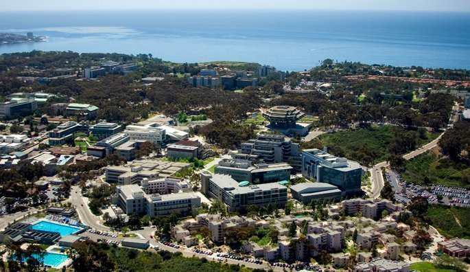

My last internship was here locally for Tulare County Office of Education, Choices Office which dealt with afterschool programs and drug prevention programs in 3 counties. They also held events throughout the year such as Red Ribbon Week, Anti-Tobacco Challenge Bowl, and Slick Rock Student Film Festival. Here I helped with tier 1 support and worked with data that we would collect to create reports and charts to show that they are complying with the grants rules and regulation. When we had events, I would put presentations together that would play there. I also went around some of the school and took pictures and videos of the kids. The goal behind this program is to help children make better choices and to keep them off the streets after school and help them with their homework. I worked in after school programs as one of my first jobs, so I know how it works at the schools and working here it opened me to the background work that goes into these programs. It is not easy, and it takes lots of team effort to get the finished product.
<
